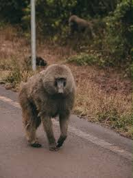

Los babuinos (Papio) son un género de primates catarrinos de la familia Cercopithecidae (monos del Viejo Mundo), considerados de los más grandes de su grupo tras los grandes simios. Especies principales Se reconocen cinco especies principales dentro del género Papio: • Babuino olivo (Papio anubis) • Babuino amarillo (Papio cynocephalus) • Babuino hamadryas (Papio hamadryas) • Babuino de Guinea (Papio papio) • Babuino chacma (Papio ursinus) Características físicas • Tamaño y peso: Miden entre 45 cm y 1 metro de longitud y pesan desde los 11 kg hasta más de 40 kg según la especie. • Dimorfismo sexual: Marcado. Los machos son significativamente más grandes, pesados, tienen colmillos más largos y afilados, y suelen presentar una melena alrededor del cuello y los hombros. • Apariencia: Tienen un hocico alargado similar al de un perro, mandíbulas potentes y una postura predominantemente cuadrúpeda y terrestre. Hábitat y distribución • Habitan principalmente en las sabanas, estepas, bosques abiertos, zonas rocosas y semiáridas de África y, en el caso del babuino hamadryas, también en la península arábiga. • No construyen nidos; por las noches duermen en la seguridad de acantilados, montañas o árboles altos para protegerse de los depredadores. Comportamiento y organización social • Sociedad en tropas: Viven en grupos jerárquicos llamados tropas que pueden ir desde unos pocos individuos hasta más de 200 o 300 miembros. • Dieta omnívora: Son oportunistas; su alimentación incluye frutas, semillas, pastos, insectos, huevos y pequeños vertebrados. • Inteligencia y defensa: Son astutos, muy vocales y capaces de trabajar en equipo para defender a la tropa, logrando ahuyentar o enfrentar incluso a grandes felinos como los leopardos. • Acicalamiento: Pasan gran parte del día desparasitándose y acicalándose entre ellos para reforzar los vínculos sociales dentro del grupo.